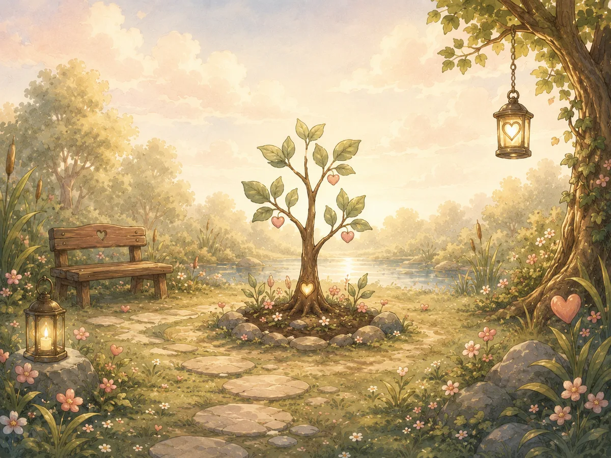

Tap a leaf
Every leaf holds one true thing.
There are no empty leaves for days you missed.
No chains to break. The tree grows whenever something is kept.
Every saved gratitude becomes a dated leaf.
The first roots are settling in. There is no hurry.

Your first gratitude will grow the first dated leaf. Nothing else is required.
Grow today’s leafThere are no empty leaves for days you missed.
Choose a branch to visit its leaves.
A day without a gratitude leaves no scar and breaks no chain. The next leaf simply grows whenever you return.